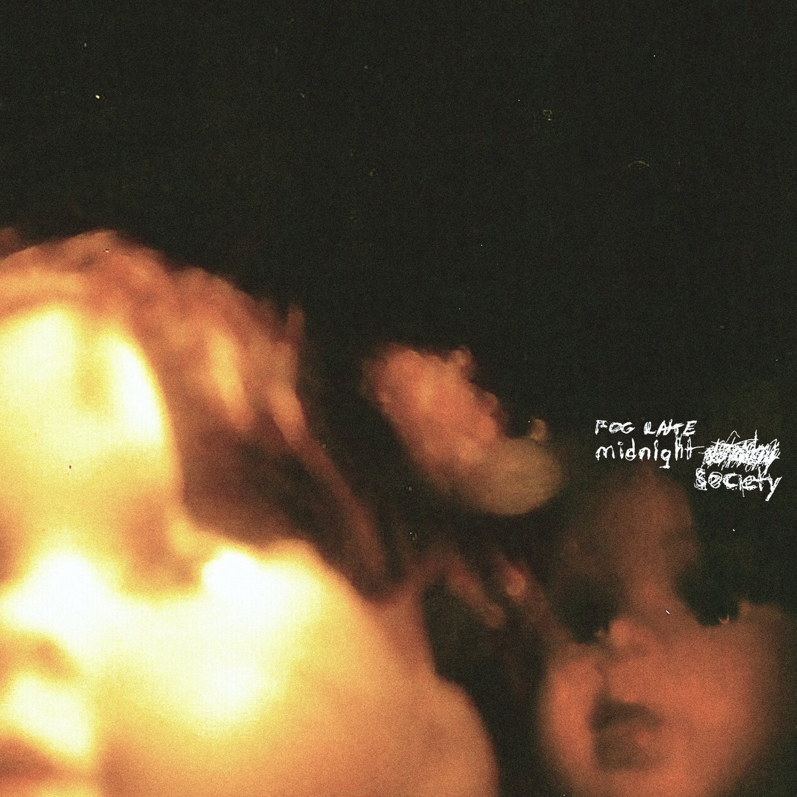
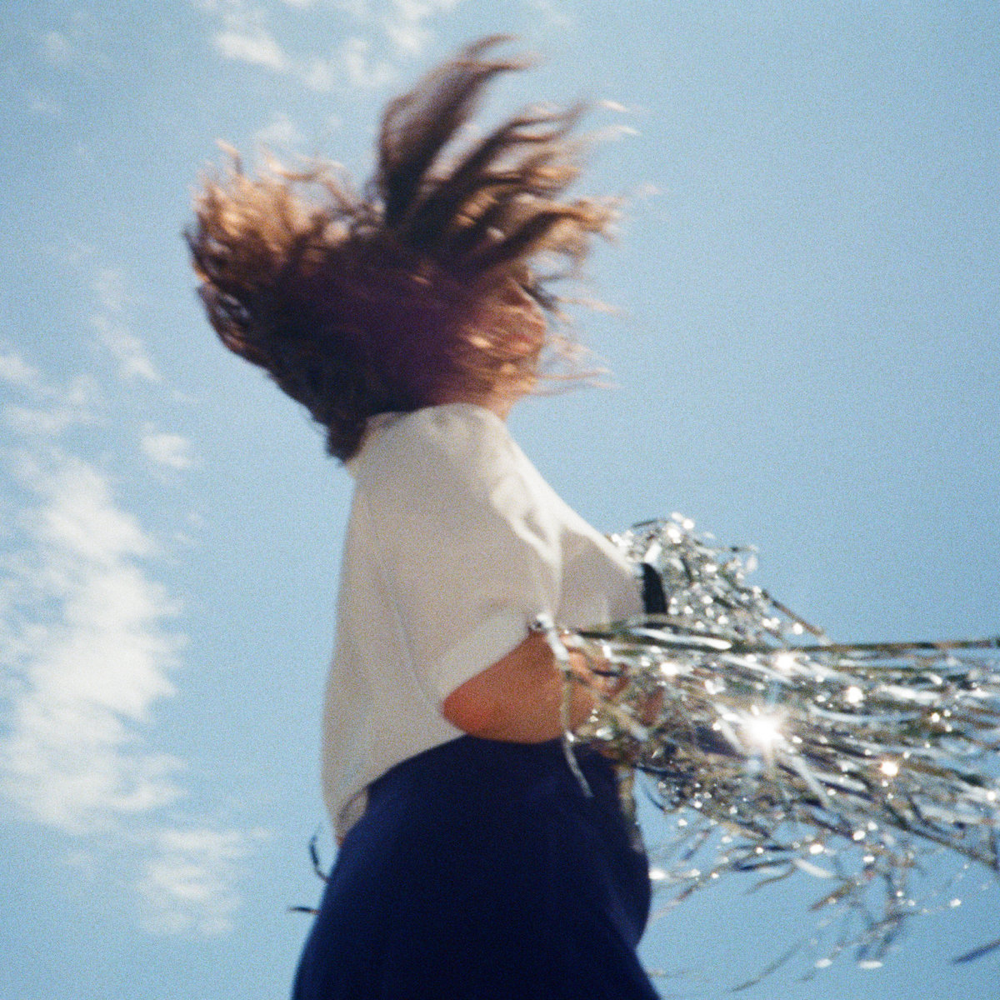
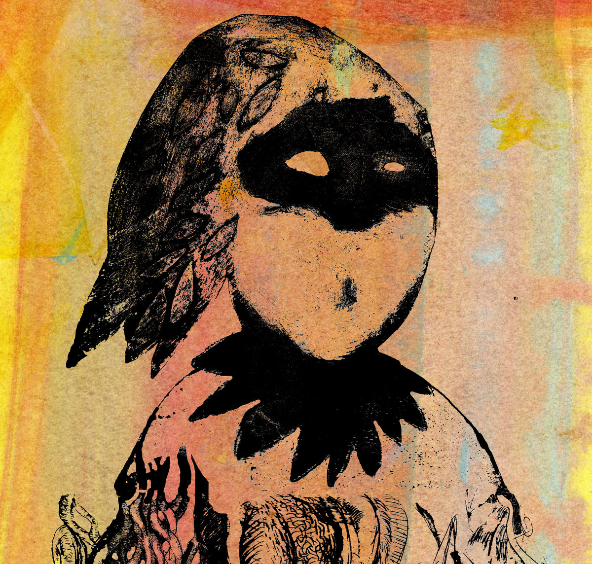

Bandcamp Friday is March 7th, 2025. I always like to use these opportunities to both find/support Creative Commons music and thought I'd start sharing some of my picks.
If you're interested in CC music, be sure to checkout the tool I made for finding CC music on BC: cc-bc.

Moody and mellow bedroom pop from Canada, midnight society reminds me of a more lo-fi Mac DeMarco or a more peppy Sparklehorse. Dreamy, whispery, and melancholic.

More music from Canada, Dollar Story Disco's upbeat, danceable music belies its often bittersweet lyrics. Reminiscent of Julia Jacklin in Phantastic Ferniture.

Close to the border of being too avant-garde for my tastes, I have to add Electric Voyeur for expertly balancing the experimental with the musical. I was torn between listing this album or First Aid Kit; both are worth your time. Listening to Big Blood I feel both pushed away and held close.